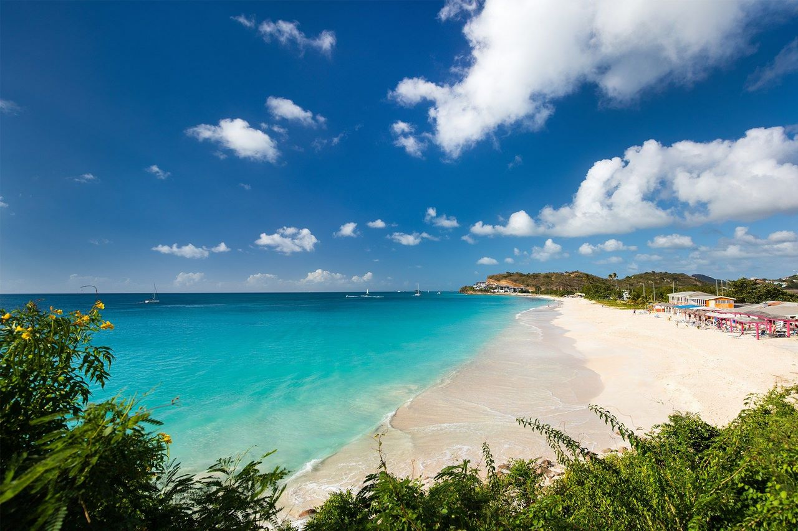
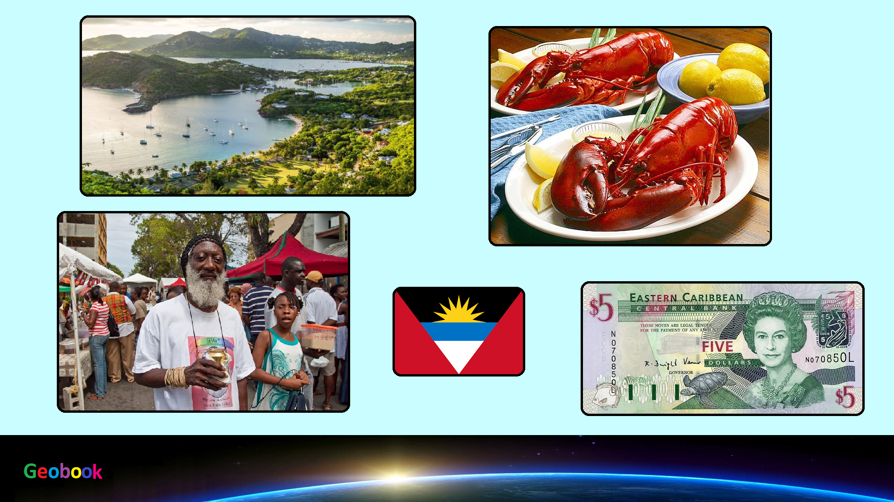

×

Antigua and Barbuda
Происхождение названия
Название происходит от испанских слов: Antigua — «древний» и barbuda «бородатый». Остров Антигуа, первоначально названный араваками «Вададли», сегодня называется местными жителями «Вададлы»; карибы, вероятно, называли его Вайомони. Христофор Колумб, посетивший остров в 1493 году, возможно, назвал его Санта-Мария-ла-Антигуа (исп. Santa Maria la Antigua), в честь иконы в Севильском кафедральном соборе.
История
Первые поселения людей на островах Антигуа и Барбуда появились в 3 тысячелетии до н. э.
Острова открыты Христофором Колумбом в 1493 году во время его второй экспедиции.
С 1632 года — владение Великобритании.
В 1671 году Антигуа и Барбуда вместе с островами Сент-Китс, Невис, Ангилья и Монтсеррат входят в состав колонии Подветренные острова.
В 1958—1962 годах Антигуа — в составе Вест-Индской федерации, а колония Подветренные острова в 1960 году была официально упразднена.
В феврале 1967 года Великобритания предоставила Антигуа статус «ассоциированного с Великобританией государства» со всей полнотой внутреннего самоуправления при сохранении ответственности Великобритании за оборону и внешние отношения.
С 1 ноября 1981 года — независимое государство Антигуа и Барбуда.
Имеет дипломатические отношения с Российской Федерацией (установлены с СССР 5.01.1990).
Правительство и политика
На данный момент действующий президент страны — Елизавета II (с 6 февраля 1952).
Данные: Дата рождения 21 апреля 1926. Место рождения Мейфэр, Лондон, Великобритания. Супруг Филипп Маунтбеттен. Дети Чарльз, принц Уэльский, Анна, принцесса Великобритании, Эндрю, герцог Йоркский и Эдуард, граф Уэссекский.
Праздники
| Дата | Праздник | Примечание |
|---|
| 1 января | Новый год | Начало календарного года |
| 2 мая | День рабочего | В честь всех рабочих |
| 14 июня | День рождения королевы | День рождения королевы |
| 4 июля | День Caricom | День Caricom |
| 7 октября | Торговый праздник | Торговый праздник |
| 25 декабря | Рождество | Празднование Рождества |
____
